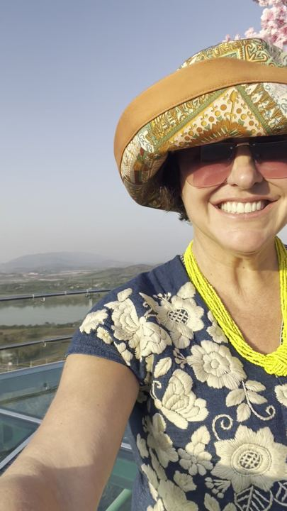

Chiang Rai, Slowly
Three temples in three colours, a golden clock, the bend in the Mekong where three countries meet, and a slow boat to Laos.
แอ่วเชียงราย ค่อย ๆ ไปเน้อ — วัดขาว วัดฟ้า บ้านดำ หอนาฬิกาทอง สามเหลี่ยมทองคำ แล้วก็ล่องเรือช้าไปลาวเจ้า
By NaN · Photographs from her camera roll
The most beautiful afternoon in the north
สามเหลี่ยมทองคำ ยามแลง งามขนาดเจ้า
The Golden TriangleChiang Rai is the northernmost city in Thailand and among its gentlest: a sleepy little town full of lovely people, as Nan puts it, with a golden clock tower at the centre and the hills rising on every side. It is small enough to cross by scooter in ten minutes and generous enough to fill a week.
Within half an hour of the clock tower stand three of the most extraordinary buildings in Asia, each the life's work of a Chiang Rai artist: a temple in white, a temple in blue, and a house in black. An hour north, the Kok and the Ruak and the Mekong carry you to the Golden Triangle, where Thailand, Laos and Myanmar meet on one bend of the river. That was the highlight of our visit, and we went back several times.
เชียงรายเป็นเมืองเล็ก ๆ ผู้คนใจดี แอ่วได้สบาย ๆ ทั้งวัน ม่วนใจ๋แต๊เจ้า
The sights · ที่เที่ยวHeadliners
“One of the most beautiful places in Thailand. It was the highlight of our visit, and we went back several times.”
Nan, on the Golden Triangle

Two days down the Mekong to Luang Prabang
ล่องเรือช้าไปหลวงพระบาง สองวันหนึ่งคืนเจ้า
Picked up at your door before dawn, across the border by eight, on the river by ten. From ฿1,690.
The slow boatSidequests · แอ่วนอกเส้นทางThe small wonders
Laila Group · ไลลากรุ๊ปEverything, from one alley
Laila Group keeps its office on Thai Viwat Alley, a few minutes' walk from the clock tower. From there it runs the slow boats and trains to Laos, day trips to every mountain on this page, cars with drivers and scooters by the day, a visa office, and a designer consignment shop next door.
ไลลากรุ๊ป อยู่ซอยไทยวิวัฒน์ กลางเมืองเชียงราย มีทั้งทัวร์ เรือช้าไปลาว รถเช่า มอเตอร์ไซค์ งานวีซ่า แล้วก็ร้านแบรนด์เนมฝากขาย ทักมาได้เน้อเจ้า
Red, green, gold, and then the night bazaar
หอนาฬิกาเปลี่ยนสีทุกค่ำเจ้า
The clock tower